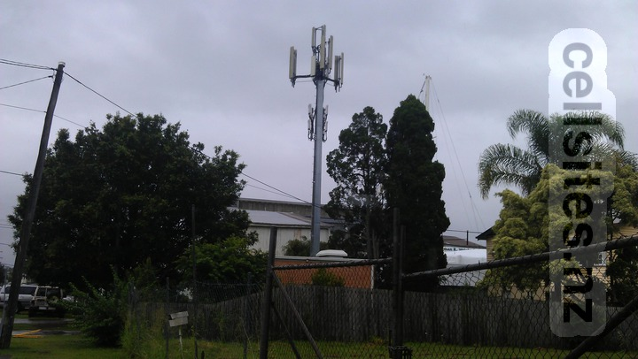

Telstra Charlotte Exchange
- Telstra 850/900/1800 MHz
- 3GIS 2100 MHz
- ACMA: 51495
- RFNSA: 4000057

Telstra Bulimba
- Telstra 850/900 MHz (two pairs of antennas either side)
- Telstra 1800 MHz (antenna middle bottom)
- 3GIS 2100 MHz (antenna middle top)
- ACMA: 400921
- RFNSA: n/a
